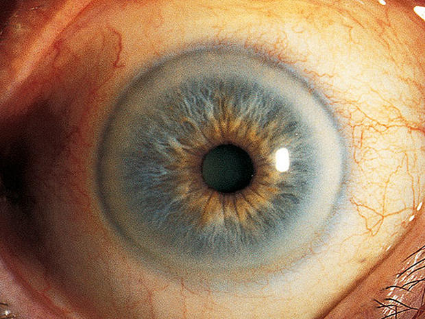

Lines & Rings in Ophthalmology
·
Arlt's Line = conjunctival scar in sulcus
subtarsalis in Trachoma.
·
Ehrlich-Turck Line = linear deposition of KPs
in uveitis
·
Ferry's
Line = corneal epithelial iron
line at the edge of filtering blebs.
·
Hudson-Stahil Line= Horizonatl corneal
epithelial iron line at the inferior one third of cornea due to aging.
·
Khodadoust
Line = corneal graft endothelial
rejection line composed of inflammatory cells.
·
Paton's Line = Circumferential retinal
folds due to optic nerve edema.
·
Sampaoelesi line = Increased pigmentation
anterior to Schwalbe's line in pseudoexfoliation syndrome.
·
Zentmeyer line (Scheie's Line): on
the equatorial surface of the lens pigment dispersion
syndrome
·
Schwalbe's
Line = Angle structure representing peripheral edge of
Descemets membrane.
·
Stockers Line =
Corneal epithelial iron line at the edge of pterygium
·
White
lines of Vogt =
Sheathed or sclerosed vessels seen in Lattice degeneration
·
Fingerprint lines: The map-dot
fingerprint dystrophy
·
LASIK Iron Line:
After LASIK for myopia, the central corneal curvature is flatter than before
surgery. The tear film distribution is therefore altered, allowing some pooling
centrally. This pooling can cause iron deposition in the central epithelium. A
similar effect can be seen after steeping of the cornea from treatment of hyperopia.
In the case of hyperopia, a pseudo-Fleischer's ring
iron deposition can be seen. These iron lines do not affect vision.
·
Vogt's striae occur centrally in a patient with keratoconus.
By applying digital pressure on the eye while looking through the slit lamp,
these striae in the deep cornea, mostly Descemet's membrane, disappear, which
is charac teristic of keratoconus.
·
The Descemet's breaks or Haab's striae from birth trauma tend to be vertical, while the Descemet's
tears associated with congenital glaucoma tend to be horizontal or curvilinear.
·
Ring Keratitis:
The hallmark of Acanthamoeba keratitis
·
Kayser-Fleischer's ring: Wilson's disease
·
Corneal rust ring: A small, reddish
brown, circular opacity remained in the cornea after the removal of an iron
foreign body.
·
Coats' ring: remnants of a foreign body.
The remnants are fine iron deposits in the cornea.
·
Fleischer's ring:
visible all around the base of cone in Keratoconus
·
Pseudo-Fleischer's
ring: iron deposition can be seen in Hyperopia
·
Soemmering's ring: early opacification of
lens capsule in cataract
·
Vossius' ring: on lens in concussion
injury to eye
·
Weiss ring: epipapillary glial tissue
torn from the optic disc in Posterior vitreous detachment (PVD)
·
Double ring sign: with the peripheral
margin of the encircling ring corresponding to the border of a normal-sized
optic disc. Seen in Hypoplasia of the Optic Disc.
·
Schlagel lines: multiple yellow lesions at the
posterior pole and periphery, arranged in clumps or linear streaks, in
multifocal choroiditis
Type of Pigment
|
Name of Deposit
|
Disorder
|
Location in Cornea
|
Iron
|
Stocker’s line
|
Pterygium
|
Epithelium
|
Hudson-Stahli line
|
In old age
|
Epithelium
|
|
Ferry’s line
|
Filtering bleb
|
Epithelium
|
|
Fleischer’s ring
|
Keratoconus
|
Epithelium
|
|
Coat’s white ring
|
Previous Metallic foreign
body injury
|
Bowman’s layer
|
|
Siderosis
|
Stroma
|
||
Blood staining of cornea
|
Stroma
|
||
Copper
|
Kayser-Fleischer ring
|
Wilsons’s Disease
|
Descement’s membrane
|
Melanin
|
Krukenberg’s spindle
|
Pigment dispersion
syndrome
|
Endothelium
|
Silver
|
Argyrosis
|
Stroma
|
|
Gold
|
Chrysiasis
|
Stroma
|
- compiled & published by Dr Dhaval Patel MD AIIMS